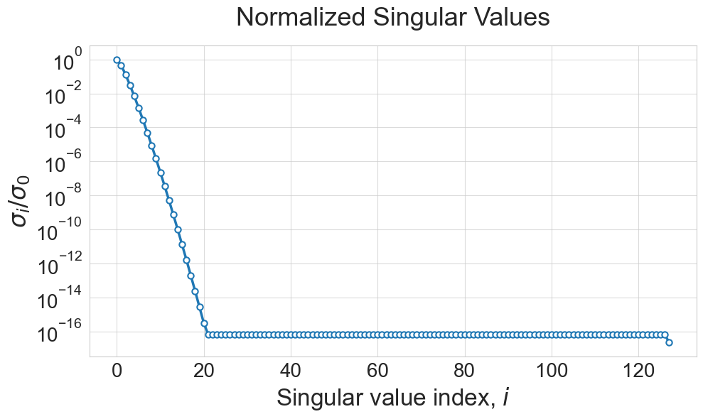
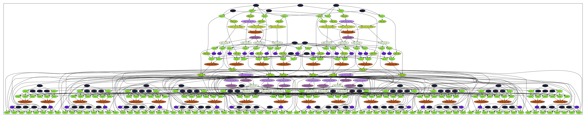
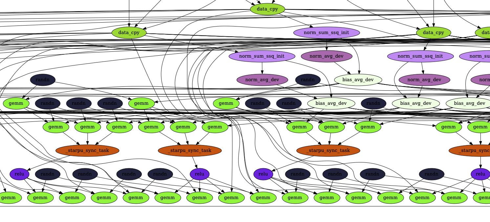
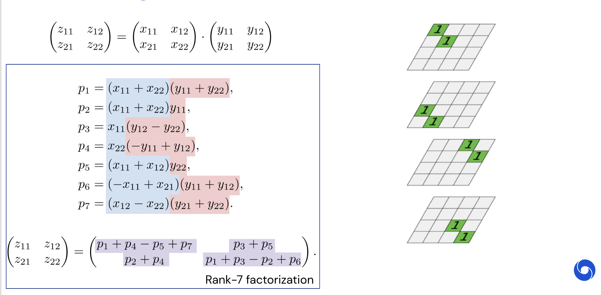

from IPython.display import YouTubeVideo
YouTubeVideo("7HF5Oy8IMoM")Recap of the previous lectures
- Floating point arithmetics and related issues
- Stable algorithms: backward and forward stability
- Most important matrix norms: spectral and Frobenius
- Unitary matrices preserve these norms
- There are two “basic” classes of unitary matrices: Householder and Givens matrices
Examples of peak performance
Flops –– floating point operations per second.
Giga = 2^{30} \approx 10^9,
Tera = 2^{40} \approx 10^{12},
Peta = 2^{50} \approx 10^{15},
Exa = 2^{60} \approx 10^{18}
What is the peak perfomance of:
- Modern CPU
- Modern GPU
- Largest supercomputer of the world?
Clock frequency of CPU vs. performance in flops
FLOPS = sockets * (cores per socket) * (number of clock cycles per second) * (number of floating point operations per cycle).
- Typically sockets = 1
- Number of cores is typically 2 or 4
- Number of ticks per second is familiar clock frequency
- Number of floating point operations per tick depends on the particular CPU
- Modern CPU (Intel Core i7) –– 400 Gflops
- Modern GPU Nvidia DGX H100 – depends on the precision!
- Largest supercomputer in the world –– 1.102 Exaflop/s –– peak performanse
Matrix-by-vector multiplication (matvec)
Multiplication of an n\times n matrix A by a vector x of size n\times 1 (y=Ax):
y_{i} = \sum_{j=1}^n a_{ij} x_j
requires n^2 mutliplications and n(n-1) additions. Thus, the overall complexity is 2n^2 - n = \mathcal{O}(n^2)
How bad is \mathcal{O}(n^2)?
Let A be the matrix of pairwise gravitational interaction between planets in a galaxy.
The number of planets in an average galaxy is 10^{11}, so the size of this matrix is 10^{11} \times 10^{11}.
To model evolution in time we have to multiply this matrix by vector at each time step.
Top supercomputers do around 10^{16} floating point operations per second (flops), so the time required to multiply the matrix A by a vector is approximately
\begin{align*} \frac{(10^{11})^2 \text{ operations}}{10^{16} \text{ flops}} = 10^6 \text{ sec} \approx 11.5 \text{ days} \end{align*}
for one time step. If we could multiply it with \mathcal{O}(n) complexity, we would get
\begin{align*} \frac{10^{11} \text{ operations}}{10^{16} \text{ flops}} = 10^{-5} \text{ sec}. \end{align*}
Here is the YouTube video that illustrates collision of two galaxisies which was modelled by \mathcal{O}(n \log n) algorithm:
Can we beat \mathcal{O}(n^2)?
- Generally speaking NO.
- The point is that we have \mathcal{O}(n^2) input data, so there is no way to be faster for a general matrix.
- Fortunately, we can be faster for certain types of matrices. Here are some examples:
- The simplest example may be a matrix of all ones, which can be easily multiplied with only n-1 additions. This matrix is of rank one. More generally we can multiply fast by low-rank matrices (or by matrices that have low-rank blocks)
- Sparse matrices (contain \mathcal{O}(n) nonzero elements)
- Structured matrices:
- Fourier
- Circulant
- Toeplitz
- Hankel
Matrix-by-matrix product
Consider composition of two linear operators:
- y = Bx
- z = Ay
Then, z = Ay = A B x = C x, where C is the matrix-by-matrix product.
Matrix-by-matrix product (MM): classics
Definition. A product of an n \times k matrix A and a k \times m matrix B is a n \times m matrix C with the elements
c_{ij} = \sum_{s=1}^k a_{is} b_{sj}, \quad i = 1, \ldots, n, \quad j = 1, \ldots, m
For m=k=n complexity of a naïve algorithm is 2n^3 - n^2 = \mathcal{O}(n^3).
Discussion of MM
Matrix-by-matrix product is the core for almost all efficient algorithms in numerical linear algebra.
Basically, all the dense NLA algorithms are reduced to a sequence of matrix-by-matrix products.
Efficient implementation of MM reduces the complexity of numerical algorithms by the same factor.
However, implementing MM is not easy at all!
Efficient implementation for MM
Q1: Is it easy to multiply a matrix by a matrix in the most efficient way?
Answer: no, it is not easy
If you want it as fast as possible, using the computers that are at hand.
Demo
Let us do a short demo and compare a np.dot() procedure which in my case uses MKL with a hand-written matrix-by-matrix routine in Python and also its numba version.
import numpy as np
def matmul(a, b):
n = a.shape[0]
k = a.shape[1]
m = b.shape[1]
c = np.zeros((n, m))
for i in range(n):
for j in range(m):
for s in range(k):
c[i, j] += a[i, s] * b[s, j]
return cimport numpy as np
from numba import jit # Just-in-time compiler for Python, see http://numba.pydata.org
@jit(nopython=True)
def numba_matmul(a, b):
n = a.shape[0]
k = a.shape[1]
m = b.shape[1]
c = np.zeros((n, m))
for i in range(n):
for j in range(m):
for s in range(k):
c[i, j] += a[i, s] * b[s, j]
return cThen we just compare computational times.
Guess the answer.
import jax.numpy as jnp
#from jax.config import config
#config.update("jax_enable_x64", True)
n = 10
a = np.random.randn(n, n)
b = np.random.randn(n, n)
a_jax = jnp.array(a)
b_jax = jnp.array(b)
%timeit matmul(a, b)
%timeit numba_matmul(a, b)
%timeit a @ b
%timeit (a_jax @ b_jax)#.block_until_ready()Platform 'METAL' is experimental and not all JAX functionality may be correctly supported!
WARNING: All log messages before absl::InitializeLog() is called are written to STDERR
W0000 00:00:1730369320.414505 6713609 mps_client.cc:510] WARNING: JAX Apple GPU support is experimental and not all JAX functionality is correctly supported!
I0000 00:00:1730369320.451663 6713609 service.cc:145] XLA service 0x600000ce5700 initialized for platform METAL (this does not guarantee that XLA will be used). Devices:
I0000 00:00:1730369320.451824 6713609 service.cc:153] StreamExecutor device (0): Metal, <undefined>
I0000 00:00:1730369320.453663 6713609 mps_client.cc:406] Using Simple allocator.
I0000 00:00:1730369320.453675 6713609 mps_client.cc:384] XLA backend will use up to 11452858368 bytes on device 0 for SimpleAllocator.Metal device set to: Apple M2 Pro
260 μs ± 3.48 μs per loop (mean ± std. dev. of 7 runs, 1,000 loops each)
819 ns ± 2.87 ns per loop (mean ± std. dev. of 7 runs, 1,000,000 loops each)
656 ns ± 3.57 ns per loop (mean ± std. dev. of 7 runs, 1,000,000 loops each)
46.9 μs ± 1.02 μs per loop (mean ± std. dev. of 7 runs, 10,000 loops each)Is this answer correct for any dimensions of matrices?
import matplotlib.pyplot as plt
%matplotlib inline
dim_range = [10*i for i in range(1, 11)]
time_range_matmul = []
time_range_numba_matmul = []
time_range_np = []
for n in dim_range:
print("Dimension = {}".format(n))
a = np.random.randn(n, n)
b = np.random.randn(n, n)
t = %timeit -o -q matmul(a, b)
time_range_matmul.append(t.best)
t = %timeit -o -q numba_matmul(a, b)
time_range_numba_matmul.append(t.best)
t = %timeit -o -q np.dot(a, b)
time_range_np.append(t.best)Dimension = 10
Dimension = 20
Dimension = 30
Dimension = 40
Dimension = 50
Dimension = 60
Dimension = 70
Dimension = 80
Dimension = 90
Dimension = 100plt.plot(dim_range, time_range_matmul, label="Matmul")
plt.plot(dim_range, time_range_numba_matmul, label="Matmul Numba")
plt.plot(dim_range, time_range_np, label="Numpy")
plt.legend(fontsize=18)
plt.xlabel("Dimension", fontsize=18)
plt.ylabel("Time", fontsize=18)
plt.yscale("log")
Why is naïve implementation slow?
It is slow due to two issues:
- It does not use the benefits of fast memory (cache) and in general memory architecture
- It does not use available parallelization ability (especially important for GPU)
Memory architecture

- Fast memory is small
- Bigger memory is slow
Typical Memory Hierarchy Specifications
| Memory Type | Size | Access Time | Notes |
|---|---|---|---|
| CPU Registers | Few KB | <1 ns | Fastest, directly accessed by CPU |
| L1 Cache | 32-64 KB | 1-4 ns | Split into instruction and data cache |
| L2 Cache | 256 KB - 1 MB | 4-10 ns | Unified cache |
| L3 Cache | 2-32 MB | 10-20 ns | Shared between CPU cores |
| Main Memory (RAM) | 8-32 GB | 100 ns | Primary system memory |
| SSD | 256 GB - 2 TB | 10-100 μs | Fast secondary storage |
| Hard Drive | 1-10 TB | 5-10 ms | Slowest but largest storage |
Key observations: - Access time increases ~10x at each level - Size increases ~10-100x at each level - Effective use of faster memory levels is crucial for performance
Cache Lines and Cache Coherence
- Cache memory is organized into cache lines - fixed-size blocks (typically 64 bytes)
- When CPU needs data, it loads entire cache line containing that data
- This is efficient when accessing sequential memory (spatial locality)
Cache coherence ensures that: - Multiple CPU cores see consistent view of memory - When one core modifies data, other cores are notified - Prevents race conditions and data inconsistency
Why it matters for matrix operations: - Sequential access to matrix rows/columns affects cache line utilization - Poor cache line usage = more cache misses = slower performance - Multi-threaded code needs coherent caches for correctness
GPU Memory Architecture
Modern GPUs have a different memory hierarchy compared to CPUs:
| Memory Type | Size | Access Time | Notes |
|---|---|---|---|
| Registers | ~4 MB per SM | ~1 clock | Fastest, per thread/block |
| Shared Memory/L1 Cache | 64-256 KB per SM | ~20-30 clocks | Shared within thread block |
| L2 Cache | 512KB - 60MB | ~200 clocks | Shared across GPU |
| Global Memory (VRAM) | 16-80 GB | ~400-600 clocks | Main GPU memory |
| System RAM | 8-128 GB | >1000 clocks | CPU memory, accessed via PCIe |
Key differences from CPU: - Much more parallel access (thousands of threads) - Larger register file but smaller caches - Higher memory bandwidth but higher latency - Coalesced memory access critical for performance
Memory access patterns: - Coalesced: threads in a warp access consecutive memory = fast - Strided/random: threads access scattered memory = slow - Shared memory bank conflicts can limit bandwidth
Best practices: - Use shared memory for frequently accessed data - Ensure coalesced global memory access - Minimize data transfer between CPU and GPU
Note: The latest NVIDIA H100 GPU can have up to 80GB of HBM3 VRAM
Making algorithms more computationally intensive
Implementation in NLA: use block version of algorithms.
This approach is a core of BLAS (Basic Linear Algebra Subroutines), written in Fortran many years ago, and still rules the computational world.
Split the matrix into blocks! For illustration consider splitting in 2 \times 2 block matrix:
A = \begin{bmatrix} A_{11} & A_{12} \\ A_{21} & A_{22} \end{bmatrix}, \quad B = \begin{bmatrix} B_{11} & B_{12} \\ B_{21} & B_{22} \end{bmatrix}
Then,
AB = \begin{bmatrix}A_{11} B_{11} + A_{12} B_{21} & A_{11} B_{12} + A_{12} B_{22} \\ A_{21} B_{11} + A_{22} B_{21} & A_{21} B_{12} + A_{22} B_{22}\end{bmatrix}.
If A_{11}, B_{11} and their product fit into the cache memory (which is 20 Mb (L3) for the recent Intel Chip), then we load them only once into the memory.
BLAS
BLAS has three levels: 1. BLAS-1, operations like c = a + b 2. BLAS-2, operations like matrix-by-vector product 3. BLAS-3, matrix-by-matrix product
What is the principal differences between them?
The main difference is the number of operations vs. the number of input data!
- BLAS-1: \mathcal{O}(n) data, \mathcal{O}(n) operations
- BLAS-2: \mathcal{O}(n^2) data, \mathcal{O}(n^2) operations
- BLAS-3: \mathcal{O}(n^2) data, \mathcal{O}(n^3) operations
Why BLAS is so important and actual?
- The state-of-the-art implementation of the basic linear algebra operations
- Provides standard names for operations in any new implementations (e.g. ATLAS, OpenBLAS, MKL). You can call matrix-by-matrix multiplication function (GEMM), link your code with any BLAS implementation and it will work correctly
- Formulate new algorithms in terms of BLAS operations
- There are wrappers for the most popular languages
Faster algorithms for matrix multiplication
Recall that matrix-matrix multiplication costs \mathcal{O}(n^3) operations. However, storage is \mathcal{O}(n^2).
Question: is it possible to reduce number operations down to \mathcal{O}(n^2)?
Answer: a quest for \mathcal{O}(n^2) matrix-by-matrix multiplication algorithm is not yet done.
Strassen gives \mathcal{O}(n^{2.807\dots}) –– sometimes used in practice
Current world record \mathcal{O}(n^{2.37\dots}) –– big constant, not practical, based on Coppersmith-Winograd_algorithm.
It improved the previous record (Williams 2012) by 3\cdot 10^{-7}
The papers still study multiplication of 3 \times 3 matrices and interpret it from different sides (Heule, et. al. 2019)
Consider Strassen in more details.
Naïve multiplication
Let A and B be two 2\times 2 matrices. Naïve multiplication C = AB
\begin{bmatrix} c_{11} & c_{12} \\ c_{21} & c_{22} \end{bmatrix} = \begin{bmatrix} a_{11} & a_{12} \\ a_{21} & a_{22} \end{bmatrix} \begin{bmatrix} b_{11} & b_{12} \\ b_{21} & b_{22} \end{bmatrix} = \begin{bmatrix} a_{11}b_{11} + a_{12}b_{21} & a_{11}b_{21} + a_{12}b_{22} \\ a_{21}b_{11} + a_{22}b_{21} & a_{21}b_{21} + a_{22}b_{22} \end{bmatrix}
contains 8 multiplications and 4 additions.
Strassen algorithm
In the work Gaussian elimination is not optimal (1969) Strassen found that one can calculate C using 18 additions and only 7 multiplications: \begin{split} c_{11} &= f_1 + f_4 - f_5 + f_7, \\ c_{12} &= f_3 + f_5, \\ c_{21} &= f_2 + f_4, \\ c_{22} &= f_1 - f_2 + f_3 + f_6, \end{split} where \begin{split} f_1 &= (a_{11} + a_{22}) (b_{11} + b_{22}), \\ f_2 &= (a_{21} + a_{22}) b_{11}, \\ f_3 &= a_{11} (b_{12} - b_{22}), \\ f_4 &= a_{22} (b_{21} - b_{11}), \\ f_5 &= (a_{11} + a_{12}) b_{22}, \\ f_6 &= (a_{21} - a_{11}) (b_{11} + b_{12}), \\ f_7 &= (a_{12} - a_{22}) (b_{21} + b_{22}). \end{split}
Fortunately, these formulas hold even if a_{ij} and b_{ij}, i,j=1,2 are block matrices.
Thus, Strassen algorithm looks as follows. - First of all we split matrices A and B of sizes n\times n, n=2^d into 4 blocks of size \frac{n}{2}\times \frac{n}{2} - Then we calculate multiplications in the described formulas recursively
This leads us again to the divide and conquer idea.
Example of Strassen algorithm
Let’s multiply two 2x2 matrices using Strassen’s method:
A = \begin{bmatrix} 2 & 3 \\ 4 & 1 \end{bmatrix}, \quad B = \begin{bmatrix} 5 & 7 \\ 6 & 8 \end{bmatrix}
Calculate the 7 products f_1 through f_7:
\begin{align*} f_1 &= (2 + 1)(5 + 8) = 3 \cdot 13 = 39 \\ f_2 &= (4 + 1)(5) = 5 \cdot 5 = 25 \\ f_3 &= (2)(7 - 8) = 2 \cdot (-1) = -2 \\ f_4 &= (1)(6 - 5) = 1 \cdot 1 = 1 \\ f_5 &= (2 + 3)(8) = 5 \cdot 8 = 40 \\ f_6 &= (4 - 2)(5 + 7) = 2 \cdot 12 = 24 \\ f_7 &= (3 - 1)(6 + 8) = 2 \cdot 14 = 28 \end{align*}
Now compute the elements of result matrix C:
\begin{align*} c_{11} &= f_1 + f_4 - f_5 + f_7 = 39 + 1 - 40 + 28 = 28 \\ c_{12} &= f_3 + f_5 = -2 + 40 = 38 \\ c_{21} &= f_2 + f_4 = 25 + 1 = 26 \\ c_{22} &= f_1 - f_2 + f_3 + f_6 = 39 - 25 - 2 + 24 = 36 \end{align*}
Therefore:
C = \begin{bmatrix} 28 & 38 \\ 26 & 36 \end{bmatrix}
You can verify this equals the result of standard matrix multiplication!
Complexity of the Strassen algorithm
Number of multiplications
Calculation of number of multiplications is a trivial task. Let us denote by M(n) number of multiplications used to multiply 2 matrices of sizes n\times n using the divide and conquer concept. Then for naïve algorithm we have number of multiplications
M_\text{naive}(n) = 8 M_\text{naive}\left(\frac{n}{2} \right) = 8^2 M_\text{naive}\left(\frac{n}{4} \right) = \dots = 8^{d-1} M(2) = 8^{d} M(1) = 8^{d} = 8^{\log_2 n} = n^{\log_2 8} = n^3
So, even when using divide and coquer idea we can not be better than n^3.
Let us calculate number of multiplications for the Strassen algorithm:
M_\text{strassen}(n) = 7 M_\text{strassen}\left(\frac{n}{2} \right) = 7^2 M_\text{strassen}\left(\frac{n}{4} \right) = \dots = 7^{d-1} M(1) = 7^{d} = 7^{\log_2 n} = n^{\log_2 7}
Number of additions
There is no point to estimate number of addtitions A(n) for naive algorithm, as we already got n^3 multiplications.
For the Strassen algorithm we have:
A_\text{strassen}(n) = 7 A_\text{strassen}\left( \frac{n}{2} \right) + 18 \left( \frac{n}{2} \right)^2
since on the first level we have to add \frac{n}{2}\times \frac{n}{2} matrices 18 times and then go deeper for each of the 7 multiplications. Thus,
\begin{split} A_\text{strassen}(n) =& 7 A_\text{strassen}\left( \frac{n}{2} \right) + 18 \left( \frac{n}{2} \right)^2 = 7 \left(7 A_\text{strassen}\left( \frac{n}{4} \right) + 18 \left( \frac{n}{4} \right)^2 \right) + 18 \left( \frac{n}{2} \right)^2 = 7^2 A_\text{strassen}\left( \frac{n}{4} \right) + 7\cdot 18 \left( \frac{n}{4} \right)^2 + 18 \left( \frac{n}{2} \right)^2 = \\ =& \dots = 18 \sum_{k=1}^d 7^{k-1} \left( \frac{n}{2^k} \right)^2 = \frac{18}{4} n^2 \sum_{k=1}^d \left(\frac{7}{4} \right)^{k-1} = \frac{18}{4} n^2 \frac{\left(\frac{7}{4} \right)^d - 1}{\frac{7}{4} - 1} = 6 n^2 \left( \left(\frac{7}{4} \right)^d - 1\right) \leqslant 6 n^2 \left(\frac{7}{4} \right)^d = 6 n^{\log_2 7} \end{split}
(since 4^d = n^2 and 7^d = n^{\log_2 7}).
Asymptotic behavior of A(n) could be also found from the master theorem.
Total complexity
Total complexity is M_\text{strassen}(n) + A_\text{strassen}(n)= 7 n^{\log_2 7}. Strassen algorithm becomes faster when
\begin{align*} 2n^3 &> 7 n^{\log_2 7}, \\ n &> 667, \end{align*}
so it is not a good idea to get to the bottom level of recursion.
Accelerating MM by parallelization
Historically, parallel implementations of many optimized BLAS libraries rely on so-called bulk synchronous programming model: * Static work allocation and data distribution * Alternating parallel and communication regions to satisfy data dependencies: * Parallel execution * Data communications * Parallel execution * Data communications * …
Task-based programming model
- Another parallel programming paradigm, which requires total reimplementation of all known algotihms
- Entire algorithm is presented as a Directed Acyclic Graph (DAG) of asynchronously executed tasks
- Each node of the DAG is a task, that operates on data:
- Incoming edge: input data
- Outgoing edge: output data (if the task changes data)
- Special library (e.g. StarPU, PaRSEC or OpenMP) keeps track of all data and executes tasks with satisfied dependencies
- Total hardware utilization is increased due to overlapped tasks executions and data communications. Therefore, wall execution time is reduced in many cases.
DAG of tasks for a single Mixer layer: order of execution is a runtime decision

DAG of tasks for a single Mixer layer: order of execution is a runtime decision

StarPU library: sequential task-based programming model for distributed-memory systems
Typical workflow with the StarPU library requires only master thread to run user code:
- Init StarPU and all other related libraries (e.g., MPI, cuBLAS).
- Register data with StarPU.
- Submit tasks, that operate on registered data, into a pool of tasks. Tasks are inserted asynchronously, i.e., master thread continues sequential flow through the program without waiting for the result.
- Wait for all tasks to complete.
- Unregister data and free memory.
- Deinit StarPU and all related libraries (opposite to the initialization order).
StarPU library: sequential task-based programming model for distributed-memory systems
## All the rest is done by StarPU automatically: * Task executing workers for each core/device are created. StarPU supports CPU, CUDA, OpenCL and FPGA. Such a support can be extended via certain driver routines. * Data communicating worker is created in case of MPI environment. StarPU supports HPC-oriented communication library NewMadeleine https://gitlab.inria.fr/pm2/pm2. * Task is executed only when all the required input data are on the executing node. * Performance of each low-level kernel is tracked during runtime, while communication speed between different NUMA nodes of a single computer is probed at initialization time (if needed). It helps StarPU to schedule all tasks to reduce wall execution time. * Certain schedulers support work stealing from neighbour nodes. * Resilient distributed computing through asynchronous checkpointing
Strassen algorithm and tensor rank (advanced topic)
- It is not clear how Strassen found these formulas.
- However, now we can see that they are not artificial.
- There is a general approach based on the so-called tensor decomposition technique.
- Here by tensor we imply a multidimensional array - generalization of the matrix concept to many dimensions.
Let us enumerate elements in the 2\times 2 matrices as follows
\begin{bmatrix} c_{1} & c_{3} \\ c_{2} & c_{4} \end{bmatrix} = \begin{bmatrix} a_{1} & a_{3} \\ a_{2} & a_{4} \end{bmatrix} \begin{bmatrix} b_{1} & b_{3} \\ b_{2} & b_{4} \end{bmatrix}= \begin{bmatrix} a_{1}b_{1} + a_{3}b_{2} & a_{1}b_{3} + a_{3}b_{4} \\ a_{2}b_{1} + a_{4}b_{2} & a_{2}b_{3} + a_{4}b_{4} \end{bmatrix}
This can be written as
c_k = \sum_{i=1}^4 \sum_{j=1}^4 x_{ijk} a_i b_j, \quad k=1,2,3,4
x_{ijk} is a 3-dimensional array, that consists of zeros and ones:
\begin{split} x_{\ :,\ :,\ 1} = \begin{pmatrix} 1 & 0 & 0 & 0 \\ 0 & 0 & 0 & 0 \\ 0 & 1 & 0 & 0 \\ 0 & 0 & 0 & 0 \\ \end{pmatrix} \quad x_{\ :,\ :,\ 2} = \begin{pmatrix} 0 & 0 & 0 & 0 \\ 1 & 0 & 0 & 0 \\ 0 & 0 & 0 & 0 \\ 0 & 1 & 0 & 0 \\ \end{pmatrix} \\ x_{\ :,\ :,\ 3} = \begin{pmatrix} 0 & 0 & 1 & 0 \\ 0 & 0 & 0 & 0 \\ 0 & 0 & 0 & 1 \\ 0 & 0 & 0 & 0 \\ \end{pmatrix} \quad x_{\ :,\ :,\ 4} = \begin{pmatrix} 0 & 0 & 1 & 0 \\ 0 & 0 & 0 & 0 \\ 0 & 0 & 0 & 0 \\ 0 & 0 & 0 & 1 \\ \end{pmatrix} \end{split}
Trilinear decomposition
To get Strassen algorithm we should do the following trick –– decompose x_{ijk} in the following way
x_{ijk} = \sum_{\alpha=1}^r u_{i\alpha} v_{j\alpha} w_{k\alpha}.
This decomposition is called trilinear tensor decomposition and has a meaning of separation of variables: we have a sum of r (called rank) summands with separated i, j and k.
Strassen via trilinear
Now we have
c_k = \sum_{\alpha=1}^r w_{k\alpha} \left(\sum_{i=1}^4 u_{i\alpha} a_i \right) \left( \sum_{j=1}^4 v_{j\alpha} b_j\right), \quad k=1,2,3,4.
Multiplications by u_{i\alpha} or v_{j\alpha} or w_{k\alpha} do not require recursion since u, v and w are known precomputed matrices. Therefore, we have only r multiplications of \left(\sum_{i=1}^4 u_{i\alpha} a_i \right) \left( \sum_{j=1}^4 v_{j\alpha} b_j\right) where both factors depend on the input data.
As you might guess array x_{ijk} has rank r=7, which leads us to 7 multiplications and to the Strassen algorithm!
AlphaTensor
Recent AlphaTensor paper has shown how modern deep reinforcement learning can be used to get new decompositions of tensors.
Visualization

RL interpretation
In reinforcement learning agent learns to make actions based on the state and reward.
In this case, the state is the tensor.
The action is subtraction of a rank-one tensor.
If you get non-zero in the end, you get the reward.
Then, you do millions of different actions, and reinforce good results.
Selected results
Better ranks for certain matrix sizes
New variants for 4x4 Strassen that work on real hardware faster (but only for this specific hardware!)
Better antisymmetric matrix-by-vector product
Summary of MM part
- MM is the core of NLA. You have to think in block terms, if you want high efficiency
- This is all about computer memory hierarchy
- Concept of block algorithms
- (Advanced topic) Strassen and trilinear form